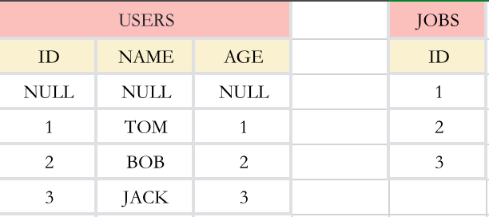
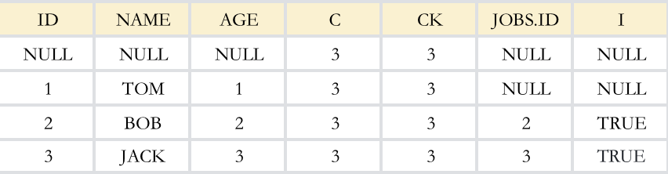
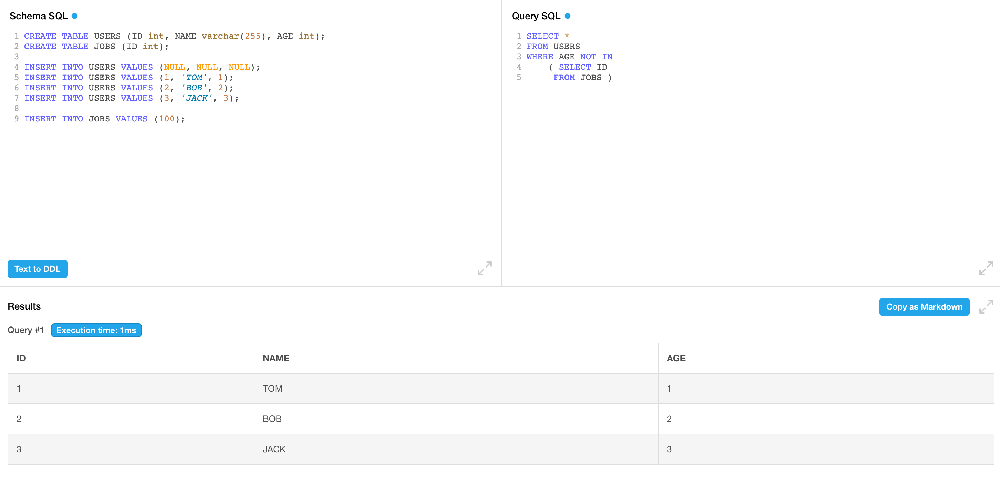
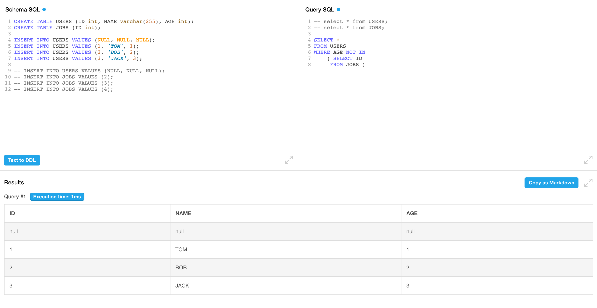

Calcite Not in 转 cross join
SQL:
1 | SELECT * |
Plan:
1 | EnumerableProject(ID=[$0], NAME=[$1], AGE=[$2]) |
Plan 转回 SQL
1 | SELECT ID, |
NOT IN 转换成了两个 join, 一个是 cross join, 另一个是 left join, 下面对这俩 join 进行分析
cross join
1 | EnumerableNestedLoopJoin(condition=[true], joinType=[inner]) |
这里先对 jobs 求了 count(*) 和 count(id), 如果 id 没有 null 值, c 和 ck 的值应该是一样的, 注意这个语句只会出来一行数据, 然后这个 cross join 相当于users 拼上了两列(c, ck)
left join
1 | EnumerableHashJoin(condition=[=($2, $5)], joinType=[left]) |
把上面的 cross join 作为输入, 并且再次 join 了一次 jobs 表(on age = id), 注意, 这里是把 age 和 id 相等的值 join 了起来, 由于是 left join, 右表无匹配则为 null
filter
小知识点: AND 级别高于 OR, 并不是左结合
1 | WHERE t2.c = 0 |
最后看下这个 filter, 这个 filter 比较复杂, 还是直接举例把:
原表:

经过两轮 join 之后的表(USERS.ID=JOBS.AGE):

首先来断下句: t2.c = 0 OR (t2.i IS NULL AND (t2.ck >= t2.c AND t2.AGE IS NOT NULL))
t2.c = 0:当 JOBS 表为空时的条件, 直接把 USERS 表所有数据选出即可.t2.i IS NULL AND (t2.ck >= t2.c AND t2.AGE IS NOT NULL)
t2.i IS NULL: 是当 JOBS 表不为空, i 为 null 代表没有 join 上的值, 符合 not in 语义, 上面例子选出这俩条
| ID | NAME | AGE | JOBS.ID | C | CK | I |
|---|---|---|---|---|---|---|
| NULL | NULL | NULL | NULL | NULL | NULL | NULL |
| 1 | TOM | 1 | NULL | NULL | NULL | NULL |
t2.ck >= t2.c: 当 JOBS 表ID有 NULL 值时, 整个查询返回空. 举个例子更容易理解:select 'true' where 3 not in (1, 2, null), 这个返回是空, 直接看 not in 比较难理解, 可以改成=, <>来看:select 'true' where 3 <> 1 and 3 <> 2 and 3 <> null,3 <> null为UNKNOWN, 既不是 true 也不是 false, 所以这里没有数据返回.t2.AGE IS NOT NULL: 当 JOBS 表不为空, 需要剔除 USERS 表 age 为 NULL 的行, NULL not in tbl 无法出来值(当 tbl 表有数据时), 再剔除第一条为 null 的, 得到结果
| ID | NAME | AGE | JOBS.ID | C | CK | I |
|---|---|---|---|---|---|---|
| 1 | TOM | 1 | NULL | NULL | NULL | NULL |
思考
为什么不直接把 a.id not in(select id from b) 转换成 left join on a.id = b.id where b.id IS NULL, 需要增加一个 cross join? 答案是当 a.id 存在 null 且 b 表有数据, 会把 null 这行多选出来. 如果再加上 a.id IS NOT NULL可行吗? 答案还是不行的, 因为当 b 表无数据, 需要把 a.id null 这行取出来(令人头疼).所以这里加了个 cross join 是非常巧妙的.
p.s.
SQL 是个三值系统 TRUE/FALSE/UNKNOWN, 其中 NULL 和所有值比较都是 UNKNOWN, 所以你不能写 col = null, 即使 col 真的有 null 值, 也出不来true, 只会出来 UNKNOWN, 正确的 NULL 值判断是 IS NULL/IS NOT NULL
所以这里 xxx NOT IN 也不会把这条NULL值选出来, NULL NOT IN/IN 都不会选出任何值, 他们的结果既不为 TRUE, 也不为 FALSE.
可以看到 jobs 插入了一个 users 不存在的值, 选出的结果会把 null 这行排除掉

但是有一种例外, 当 A not in B, B表是个空表时, 可以选出 A 表所有数据, 可以看到 null 这行数据选了出来
